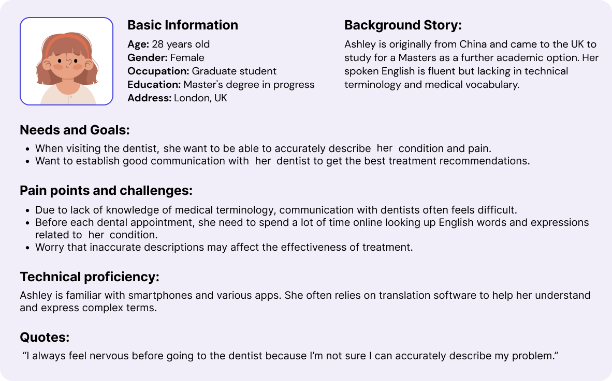
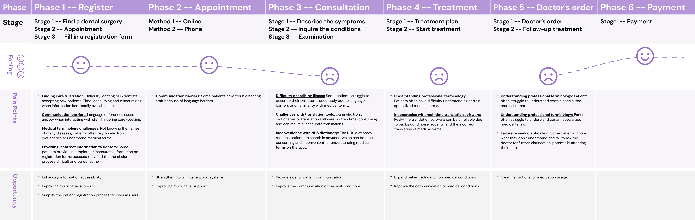
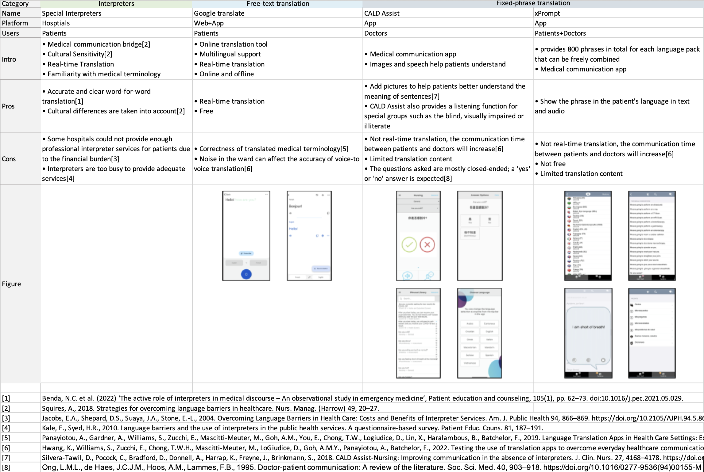
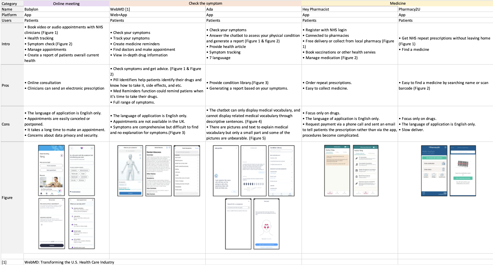
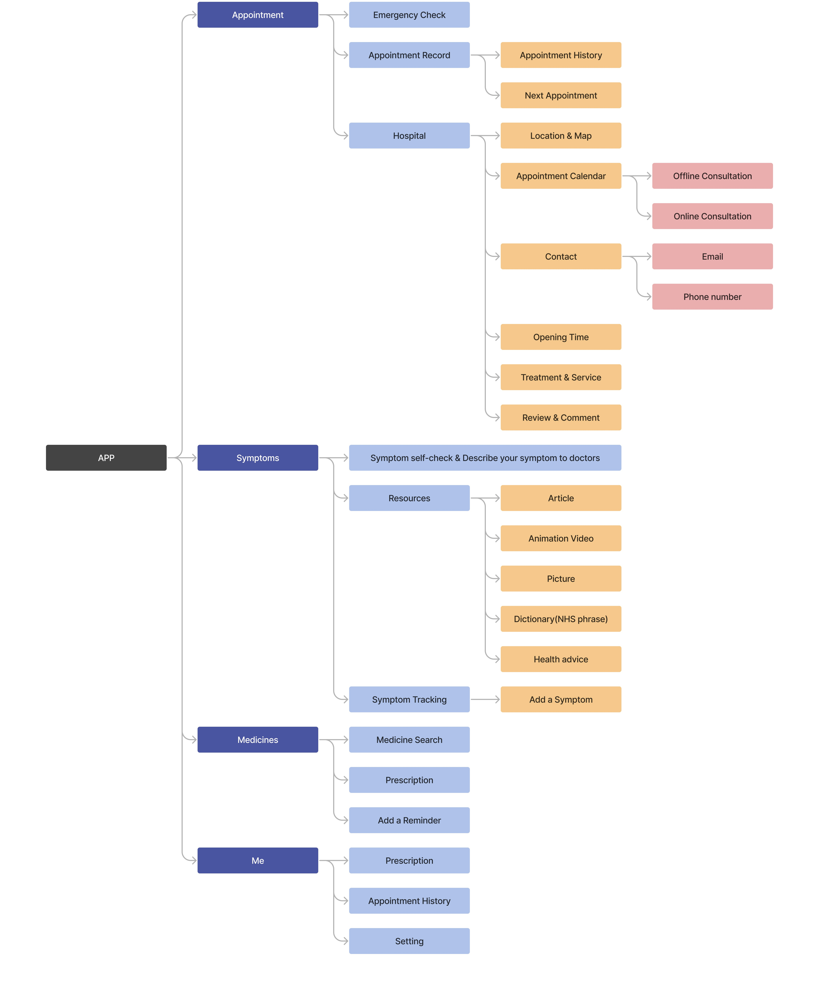
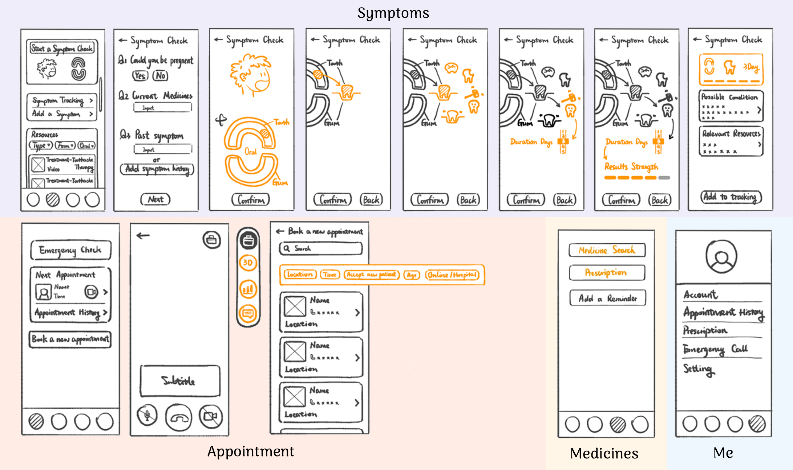
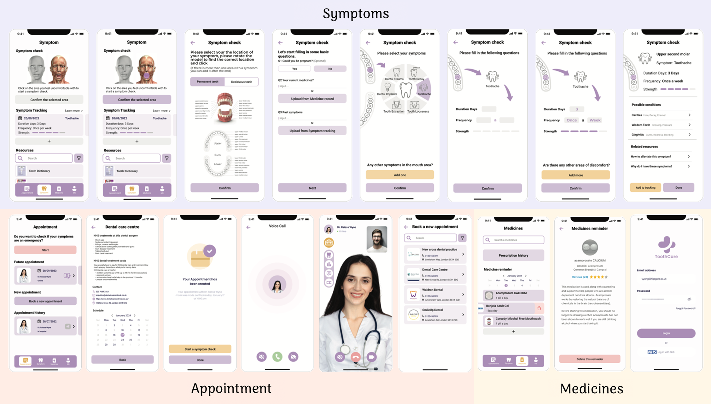

Communication Barriers in Dental Care
In the globalization of the world, more and more non-native English speakers are coming to the UK and many of these patients face communication challenges in accessing healthcare.
The project aims to improve the dental experience for non-native English-speaking patients by providing functions such as disease self-examination and oral modelling in the app to enhance patients' confidence in the process.
Year:
2023
Duration:
7 months
Platform:
Mobile
Role:
UX designer
Tools & Skills:
Figma; User Research; Prototype; User Test
Project Goal
Improve the user experience of Non-native English-speaking patients, making patients feel more confident in their communication.
Research
1 Interview & Persona
● Aim: Understanding the communication challenges faced by non-native
English-speaking patients
in receiving dental treatment.
● User Research: Conducted in-depth user interviews with 10 non-native
English speakers to
understand their pain points
in dental communication. Created detailed personas and empathy maps that highlighted specific
challenges faced by these
users.

2 User Journey
Based on the interview, I designed the following user journey, during
different stages, users encounter different challenges.
● User Journey Mapping: Mapped out the user journeys to identify critical
touchpoints where communication breakdowns occur, analyzing patient interactions with dental staff
before, during, and after appointments.

3 Current Solutions
There are two main methods to help patients overcome communication barriers:
● Method 1: Using interpretation services, which include professional interpreters and family members or using translation software or applications.

● Method 2: Using medical-related software during their medical visits.

Insights from research:
● Focus on doctor's role in patient information gathering
● Limitations in current methods for patient expression
● Lack of
active information provision tools for patients
● Challenges in patients receiving information from doctors
Takeaways:
Existing communication tools mainly assist doctors, limiting patients' ability to fully express and accurately convey their conditions, creating barriers to sharing detailed, proactive health information.
4 Problem Statement:
Non-native English-speaking patients often struggle to communicate their health needs in UK dental clinics. Translation and medical software mostly support closed-ended questions, limiting patients' ability to provide detailed information. This is a problem because it hinders dentists from gathering accurate information, increasing the risk of misdiagnosis or delayed treatment. It also affects patient satisfaction and the quality of care provided.
Design
1 Ideas
To address these communication barriers and improve the accuracy of information exchange between non-native English-speaking patients and dentists, the following design ideas aim to enhance patient expression, streamline the interaction process, and ultimately improve the quality of care provided.
3D Model
● Visual Aid:The 3D model provides a visual representation of the patient's
mouth
or teeth, allowing patients to
easily identify and highlight affected areas, reducing reliance on language and minimizing
miscommunication.
● Accurate Communication: By interacting with the 3D model, patients can
convey
specific details about their
condition visually, ensuring the dentist gathers clear and accurate information. This helps
reduce
the
risk of
misdiagnosis or delayed treatment.
● Intuitive for Non-Native Speakers:The use of a visual tool bypasses
language
barriers, allowing non-native
English-speaking patients to express their concerns without needing to understand or use
complex
medical
terminology.
Picker View (Scrolling Selector)
● Guided Choice:The picker view presents pre-set options, such as types of
pain,
intensity, and duration, enabling
patients to describe their symptoms easily and accurately without needing to formulate
responses
in
a foreign language.
● Eliminates Language Barriers: This scrolling interface allows patients to
select
from a range of symptoms or conditions,
ensuring they provide detailed information without struggling with unfamiliar terminology or
open-ended questions.
● Efficient and User-Friendly:By offering structured choices in a simple,
scrollable format, the picker view streamlines
the communication process, ensuring that patients can give specific, useful input quickly
and
with
minimal frustration.
Educational resources
like articles, videos, and dictionaries to support non-native English speakers.
Comprehensive appointment and medicine management tools
to ensure patients stay informed and organized, reducing potential miscommunication.
Symptom tracking and self-check features
to help patients continuously monitor and report their conditions more effectively.
2 Information Architecture
● Information Architecture: Designed and tested the app's information
architecture using tree
testing with 30 participants
to ensure users can easily find the information they need. Based on the test results, feedback
was used to refine the
structure, leading to more intuitive navigation and better information flow.
● Tree Testing: After optimizing the information architecture, the average
success rate for
five tasks increased from
44% to 81%.

3 Lo-Fi & Task-based User Testing
Based on the tree test findings, I developed a low-fidelity (Lo-Fi) prototype to visualize the enhanced structure of the app. This prototype then served as the foundation for task-based usability testing, which was conducted to validate the design's effectiveness in guiding users through key tasks and identifying opportunities for further refinement.
Prototyping
The Lo-Fi prototype was created based on insights from a tree test conducted on the information architecture. This approach ensured that the design effectively addressed the structural improvements needed to guide users through the app's features.

Task-Based Usability Testing
Following the prototyping phase, task-based usability testing was carried out, revealing that over
80% of participants
successfully completed critical tasks. These tasks included scheduling appointments, navigating
medical information, and
reporting symptoms. Feedback from this testing led to further iterations of the design.
Insight from Task-Based Usability Testing
Terminology Confusion
Terms such as "Relevant Resources," "next appointment," and "review or pre-consultation" were unclear to users.
Navigation Challenges
Participants struggled with accessing appointment history and medication details, indicating a need for more intuitive pathways.
Inadequate Symptom Reporting
The inability to select multiple pain locations, lack of options for adding comments or "other" symptoms, and missing frequency details limited users' ability to communicate their conditions.
Interface Clarity
Buttons such as "confirm" and "back" were not clearly labeled, potentially causing confusion during use.
4 Hi-Fi & SUS Testing
The high-fidelity (Hi-Fi) prototype was developed based on the improvements made to the low-fidelity design, incorporating insights gained from task-based usability testing. To ensure the app's usability and assess overall user satisfaction, System Usability Scale (SUS) testing was conducted. The final Hi-Fi design integrated feedback from this testing process, resulting in an improved user experience.
Prototyping
The Hi-Fi design retained the structural improvements from the Lo-Fi prototype, with further refinements to visual elements, interface clarity, and user interactions. This version aimed to create a more polished and realistic experience, enhancing elements like typography, iconography, color schemes, and layout to provide a more comprehensive understanding of the final product.

SUS Testing
● Participant: To evaluate the usability of the Hi-Fi design, a System Usability Scale
(SUS) test was conducted with
six participants
who had been treated for dental issues in the UK. All participants were non-native English speakers,
selected through
recruitment messages shared on social media and within community and school networks.
● Test: Conducted either online
or face-to-face based on participant preference, resulted in the app achieving a SUS score of 82/100,
indicating
above-average user satisfaction and usability.
Insight from SUS Testing
Functionality Improvements
-Translation: Participants suggested adding a translation feature for different languages to
cater to non-native
speakers.
- Appointment Booking: Introduce prompts for emergency self-checks to guide users.
- Symptom Reporting: Provide clearer prompts and use a medical 3D model for symptom
identification.
Content Adjustments
- Simplify symptom tracking steps to reduce unnecessary clicks.
- Introduce terms that are easy to understand alongside medical terminology.
Visual & Interaction Design
- Improve screen and font sizes for better readability.
- Enhance the visibility of icons, like adjusting the color of yellow icons that weren't
noticeable.
Evaluation and Future Improvements
● Patient Confidence: The current app, with a System Usability Scale (SUS) score of
82/100, demonstrates above-average
usability, indicating that it can help patients feel more confident in expressing their need for
access to healthcare.
● Clinical Limitations: However, the app remains insufficient during actual
clinical encounters. For first-time patients,
tangible diagnostic procedures such as X-rays remain essential, and the disease self-examination
system can only be used
as an assist.
● Ongoing Refinements: Additionally, the interface will be refined as the research
progresses, and efforts will be made to
conduct rigorous validity evaluations, such as clinical impact assessments, to determine its
clinical applicability.